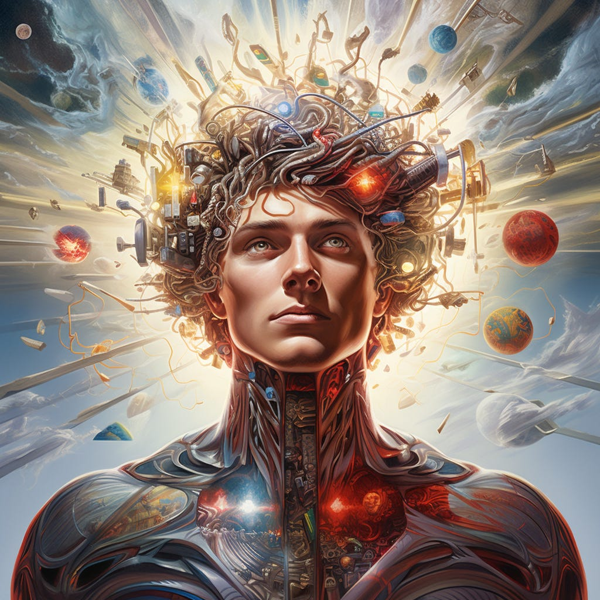
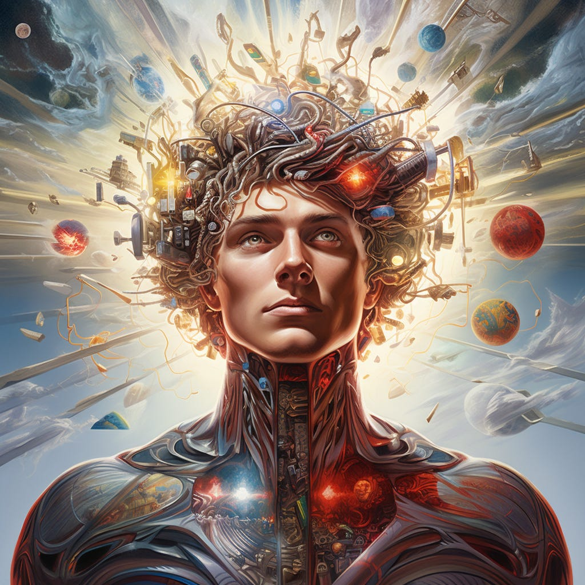

ABOUT ME
My name is Muhammad Shahirul Aiman bin Abdul Aziz, and I am 21 years old. I am currently pursuing a diploma in Information Management at UiTM Rembau, Negeri Sembilan. As the third of five siblings, I have two older sisters, one younger sister, and one younger brother.


HOBBIES & INTERESTS
My hobbies include reading books of various genres, such as romance, adventure, horror, fiction, and thriller. I also enjoy watching movies and series, and sometimes I dabble in cooking. I have always loved animals, especially cats (*except the Sphynx cat—they look like aliens to me!*). At one point, I even considered becoming a veterinarian due to my passion for animals, but I also dreamed of being a pilot to travel the world.


FAVORITES
I don’t have a specific favorite food because I enjoy eating as long as the food is good. My favorite characters include Scarlet Witch and Dr. Strange from Marvel, the Tribrid from The Legacies, and the legendary creatures from The Supernatural series.


FUN FACTS
My MBTI type is INFP, and I am known to be quite shy and introverted. I prefer spending time alone in many situations, which allows me to let my imagination run wild. Whether reading or writing fan fiction, I often imagine a world where everyone has superpowers.

 
